Background. The experiment was carried out using zebrafish as a model organism to study the early development in vertebrates. Swirl is a point mutant in the BMP2 gene that affects the dorsal/ventral body axis. The main goal of the Swirl experiment is to identify genes with altered expression in the Swirl mutant compared to wild-type zebrafish.
The arrays. The microarrays used in this experiment were printed with 8448 probes (spots), including 768 control spots. The array printer uses a print head with a 4x4 arrangement of print-tips and so the microarrays are partitioned into a 4x4 grid of tip groups. Each grid consists of 22x24 spots that were printed with a single print-tip. The gene name associated with each spot is recorded in a GenePix array list (GAL) file:
The Swirl Zebrafish data set can be downloaded from http://bioinf.wehi.edu.au/limmaGUI/DataSets.html.
The limmaGUI main window is shown below.
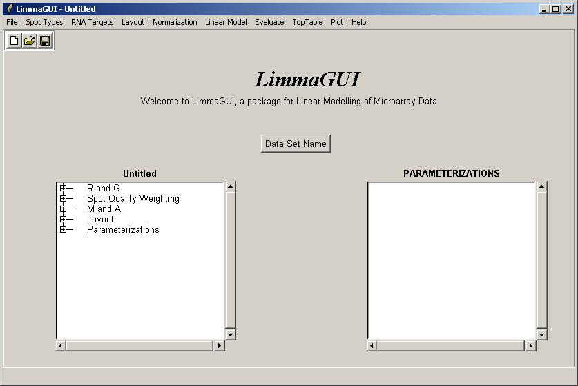From the File menu, select New.
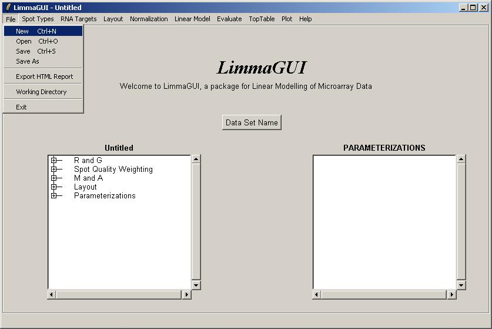You will be asked to choose a working directory. Select the directory containing the Swirl dataset.
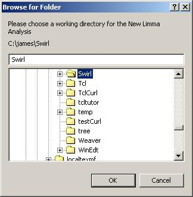Now you can open a GAL (GenePix Array List) file, an RNA Targets file (listing the hybridizations), and a Spot Types file.
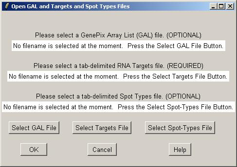Clicking on the "Select GAL File" button gives the following dialog. Open "fish.gal".
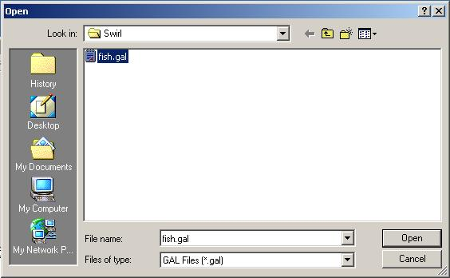The GAL file should be stored in tab-delimited text. Part of the GAL file for the Swirl data set is shown below.
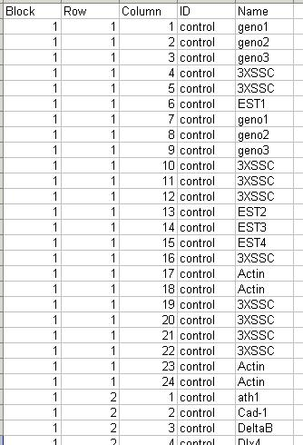
Now click on the "Select Targets" file button to open an RNA Targets file.
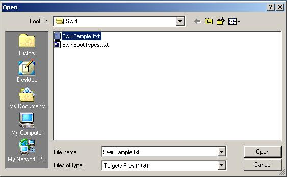The Targets file should be stored in tab-delimited text which can be generated by a spreadsheet program, such as Excel. The Swirl Targets file is shown below. (It can be viewed from within limmaGUI by clicking on "View RNA Targets" in the RNA Targets menu.)
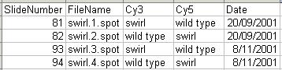Two sets of dye-swap experiments were performed making a total of four replicate hybridizations. Each of the arrays compares RNA from swirl fish with RNA from normal ("wild type") fish. The experimenters have prepared a tab-delimited file called "SwirlSamples.txt" which describes the four hybridizations:
Finally, open the Spot Types file. The Spot Types file (below) should be stored in tab-delimited text which can be generated by a spreadsheet program, such as Excel. The asterisks are wildcards which can stand for anything. The rules for assigning types to spots are applied in order from top to bottom.
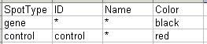Once the GAL, Targets and Spot Types files have been selected, click OK.
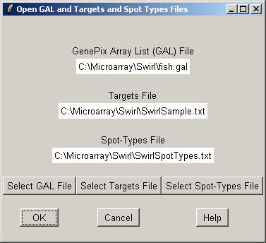Now inform limmaGUI that the image-processing files listed in the RNA Targets file are Spot files.
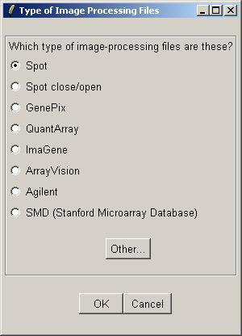For Spot files, using background correction is highly recommended.
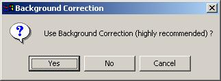For the Swirl data set, we will not use any spot quality weighting, so click "No".
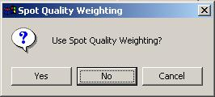When prompted for a name for this data set, type in "Swirl".
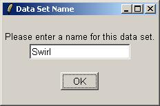Once the data set has been loaded, its name is displayed on top of the left status window. The status window shows that Red and Green background-corrected intensities (R and G) have been loaded, and that there is no spot-quality weighting. The data set name can be later modified with the "Data Set Name" button. The data set name is not the same as the file name, displayed in the title bar. For example, the same data set (Swirl) could be saved at two different stages of the analysis, e.g. SwirlArraysLoaded.lma and SwirlLinearModelComputed.lma.
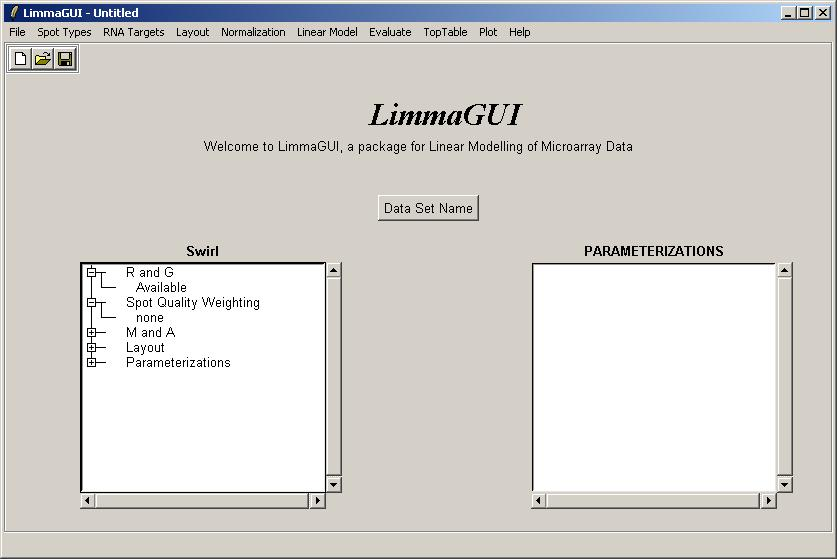Now we can check that the Targets have been read in correctly. From the RNA Targets menu, click on "View RNA Targets". The RNA Targets are displayed in a table widget. An Edit menu is provided to allow the user to copy the Targets table to the clipboard.
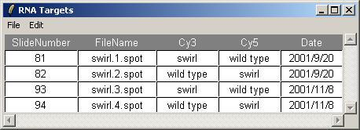The Spot Types table can viewed from within limmaGUI in a similar manner. Unlike the RNA Targets table, the Spot Types table is actually editable within limmaGUI. You can change the default colors associated with each spot type and you can even create new spot types and save the table to a tab-delimited text file. The arrow keys can be used to select the active cell in the table, while holding down Control and using the arrow keys will move the cursor within the text in one cell. The Rows menu can be used to add or delete spot types.
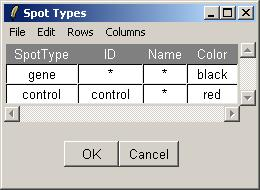If you want to check that the GAL file has been read in correctly, please see the section "Evaluating R Code".
We will now plot M (log differential expression ratio) vs A (average intensity) for the raw (unnormalized) data from one array.
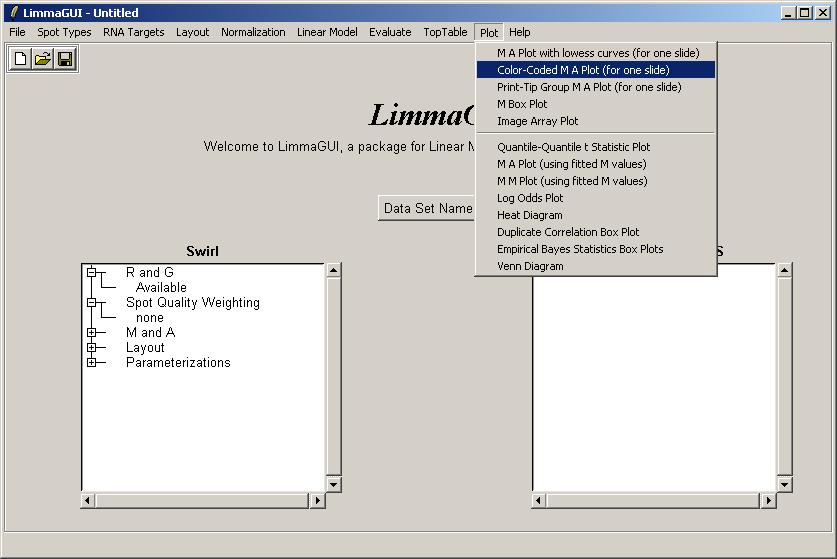Choose Slide 93
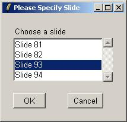Now we can choose plot symbols, sizes and colors for the different spot types in our graph. The default spot colors are those specified in the Spot Types file. By default, the size of control points on the graph is larger than the size of gene points, because usually there are so few controls (e.g. scorecard controls) and they are important to highlight.
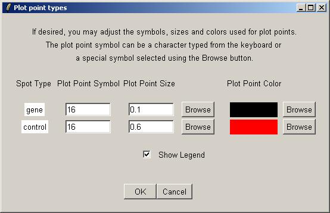Leave the plot title and axis labels at their default values. When asked about normalization, choose "No" each time.
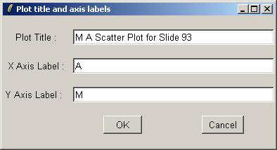The resulting plot is shown below. There is clearly a need for normalization. There is an obvious intensity effect (i.e. M depends on A) which should be removed by normalization later on.
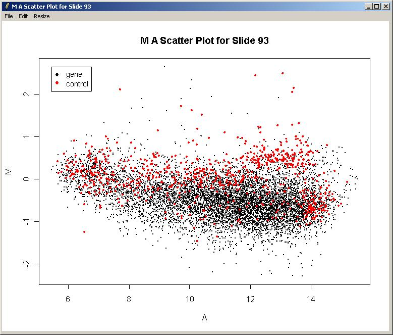Now you can close the plot window if desired. Note that the File Menu allows you to save the plot in several standard image file formats. You can also copy the graph to the clipboard via the Edit Menu or resize the plot window using the Resize menu. Unforunately it is not currently possible to resize the plot window by dragging its corner.
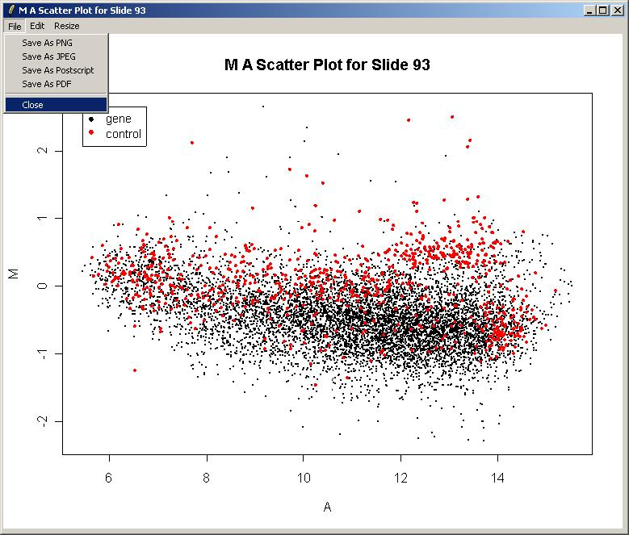Now we will demonstrate how to plot an M vs A scatter plot and corresponding loess smoothing curve for each print-tip group on an array. From the Plot Menu, select "Print-Tip Group M A Plot (for one slide)".
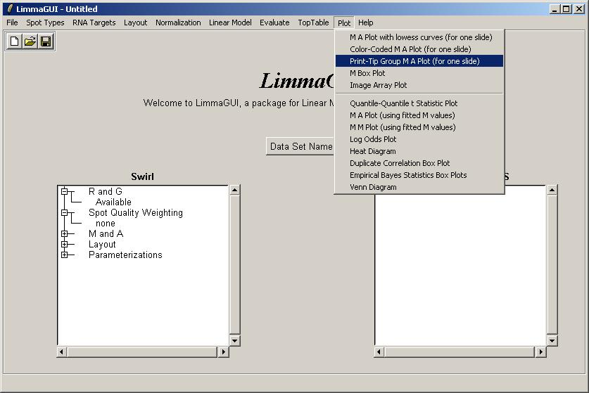Since this is the first plot for the Swirl data set which has required layout information, we will need to enter the layout information now. limmaGUI tries to automatically determine the layout from the GAL file. In this case, you can simply click "OK".
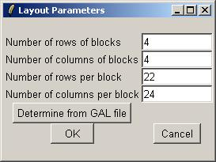Again, choose Slide 93.
The resulting plot is shown below. Clearly there is some variation between the different print-tip groups, giving evidence that print-tip-group-based normalization methods are worthwhile.
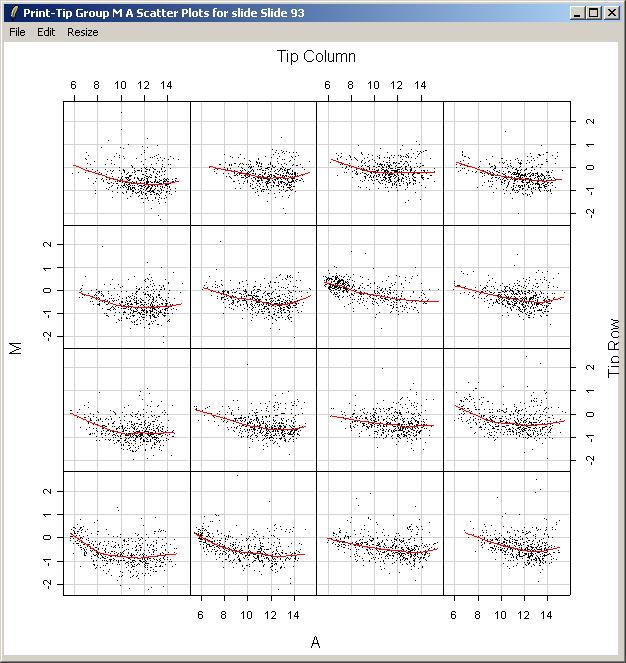Now click on "Image Array Plot" in the Plot Menu.
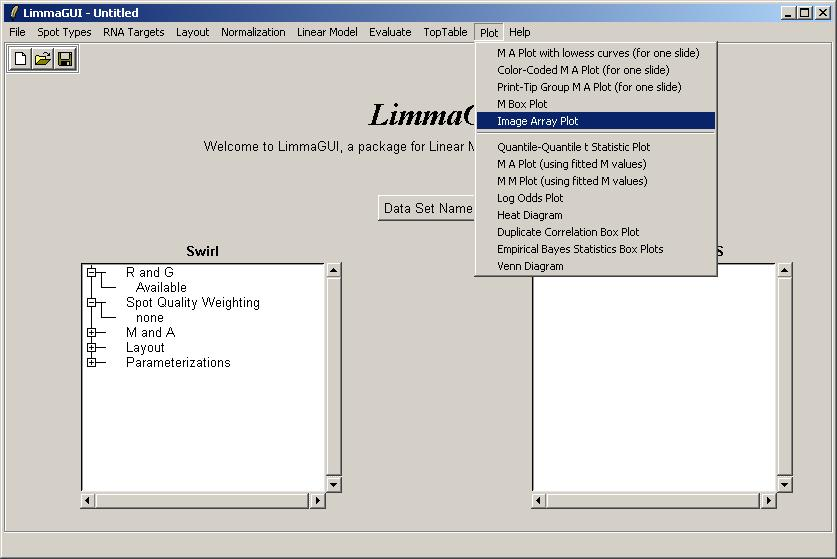Now choose "Slide 81". Advanced users, read on. It is actually possible to obtain an image
array plot which depends on multiple slides if you understand the limma data structures (RGList
and MAList), but usually this plot would be used for a single array. The status window on the
left tells you which normalization-versions are currently available out of MAraw, MAwithinArrays,
MAbetweenArrays, and MAboth. In the latest version of limmaGUI, normalization can
be done using the "Normalization" menu, but this is not shown in the screenshots. When you plot
a graph which asks you to choose between normalized and unnormalized M and A values, if you
choose "normalized" and they are not yet available, then they will be calculated on the fly
and the left status window will be updated to show that the normalized values are now available.
The same is true if you select normalized M and A values when computing a linear model fit.
Leave the expression at its default value (Mraw), which will plot log red/green ratios for slide 81 using raw (unnormalized data). Advanced users will know from the discussion above that more complex expressions can be used here, possibly depending on M and A values normalized using different methods.

Now enter a plot title, or accept the default title and click "OK".
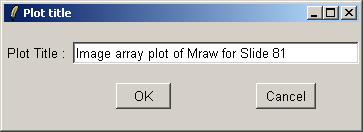The image array plot for Mraw (unnormalized log ratios) over Slide 81 is shown below.
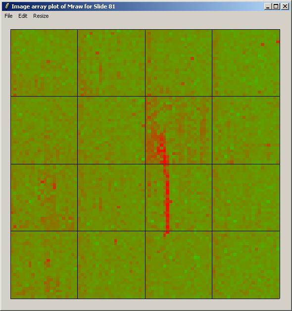The image array plot lies the slide on its side, so the first print-tip group is bottom left in this plot. We can see a red streak across the middle two grids of the 3rd row. Spots which are affected by this artefact will have suspect M-values. These spots are also visible as a cluster in the top right of the MA-plot (below).
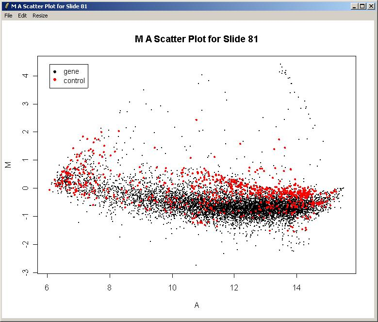Now we will use a box plot to compare the range of M values in the different print-tip groups within the first array. Select "M Box Plot" from the Plot menu.
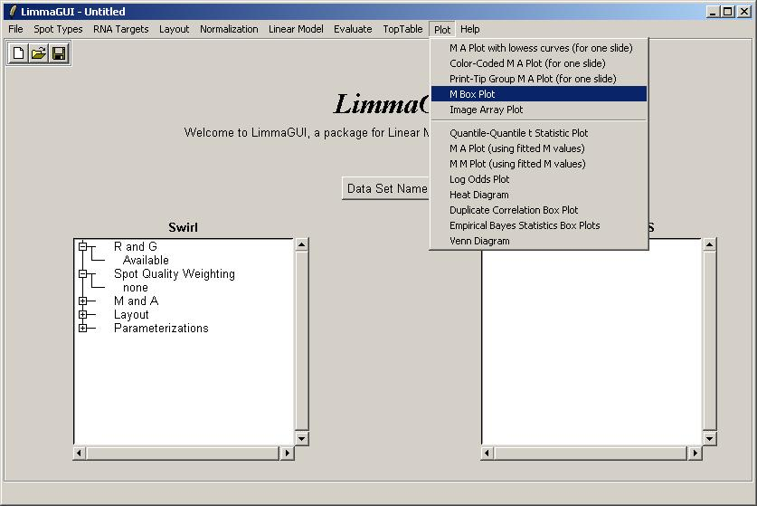Choose to plot by print-tip group.

Click "No" when asked whether to use normalized M and A values.
The resulting plot is shown below.
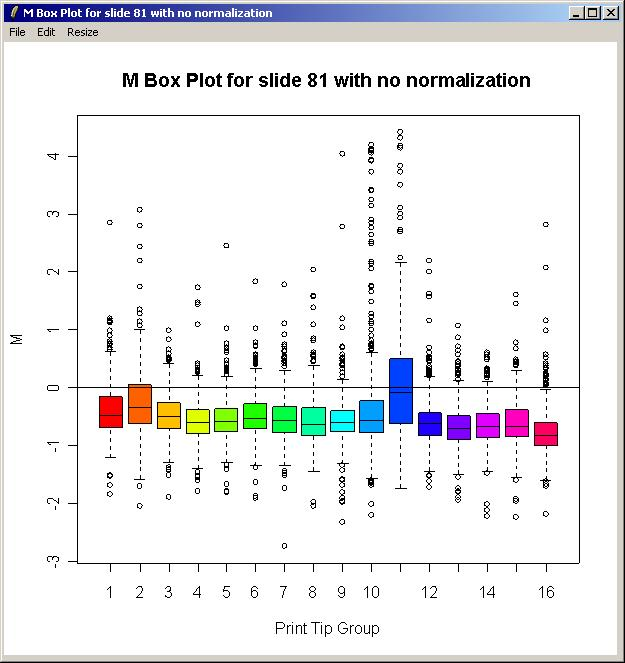There is some difference in the range of M values between the different print-tip groups, so this justifies using print-tip group within-array normalization which is the default method. In the (slightly out-of-date) screenshots shown here, this was in fact the only within-array normalization method in the GUI, whereas now the method can be chosen using the "Normalization" menu.
In two-color array analysis, it is standard to normalize within arrays, but we don't always normalize between arrays. To determine whether this is worth doing, we will plot the range of M values for each array and see if there is much difference in scale.
From the Plot menu, select "M Box Plot.
Select "Slide" to obtain one box plot for each slide in the set of arrays, rather than one box plot for each print-tip group of a single slide (the other option, "Print Tip Group").
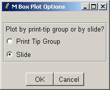When asked whether to normalize within arrays, select "Yes".

When asked whether to normalize within arrays, select "No".

The plot is shown below. There is some evidence of a difference in scale between the arrays, so in this case, we will normalize between arrays as well as within arrays when fitting the linear model.
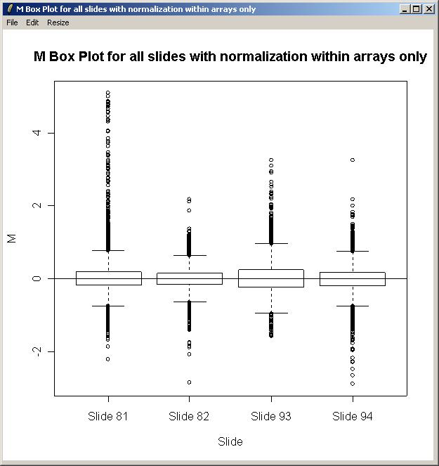Now we will compute a linear model for this set of arrays. As we have two types of RNA (Wild Type and Swirl Mutant) and a connected design, we can estimate one parameter from the linear model (i.e. one less than the number of RNA types). In this case, there is an obvious choice - the parameter we estimate is the average log differential expression ratio (M) between Swirl and Wild Type across all arrays, taking dye-swaps into account.
From the Linear Model menu, click on "Compute Linear Model Fit".
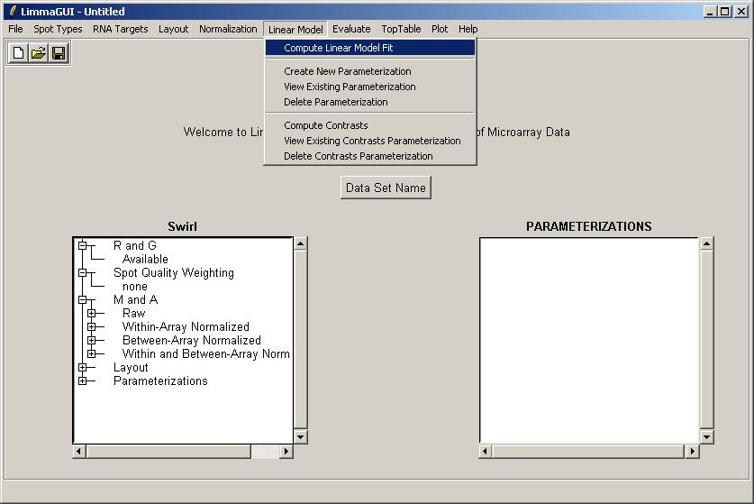If we had not already entered the layout parameters, we would be asked to do so now.

The first step of computing a linear model fit is creating a parameterization. If no parameterizations currently exist, limmaGUI will automatically prompt you to create a new parameterization after you click "Compute Linear Model Fit". (The first dialog boxes you interact with will be the same as if you had selected "Create New Parameterization" from the "Linear Model Menu".)
If, on the other hand, a parameterization had already been created, then you would have to choose whether to choose an existing parameterization for the linear model fit or whether to create a new one, i.e. you would get a Yes/No message box like this:

Now you will be asked which spots to include in the linear model fit (for this parameterization). Often we would exclude the controls (e.g. Scorecard Controls) from the linear model fit, but here we have biological controls, so we will include them.

Now you can use the drop-down combo-boxes below to define parameters for the linear model to estimate, which are log differential expression ratios between RNA types found in the Targets file. limmaGUI will use the RNA combinations selected in the drop-down comboboxes to create a design matrix. Advanced users, can click on "Advanced" to enter the design matrix directly. Defining a parameter with RNAType1 "minus" RNAType2 means that a postive value of this parameter for one gene will mean that this gene is upregulated in RNAType1 relative to RNAType2. A very similar interface is used to define contrasts (when we have more than one parameter) and in that case the "minus" can also be a "plus". If you want full flexibility and understand what a design matrix is, then click on the "Advanced" button.
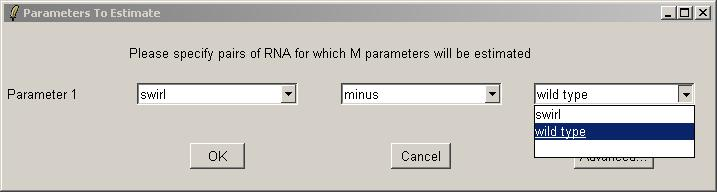Now enter a name for this parameterization.
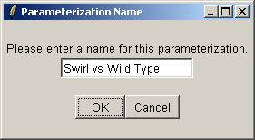Choose "Yes" to normalize within arrays.
Click "OK" to confirm the default within-array normalization method (print-tip group loess).

Choose "Yes" to normalize between arrays (i.e. click "Yes", which is NOT the default value). We choose to normalize between arrays in this case because of a reasonably significant difference in the range of M values for each array, as seen previously in a box plot.
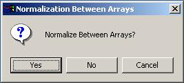The Swirl data set has no duplicates, so there is nothing to enter in the "Numer of Duplicates" dialog box. Just leave the default values at 1 and click OK.

After the linear model fit has been computed, the right status window will reflect the key decisions made in relation to the linear model. For example, the normalization method chosen was "Within arrays (printtiploess) and between arrays".
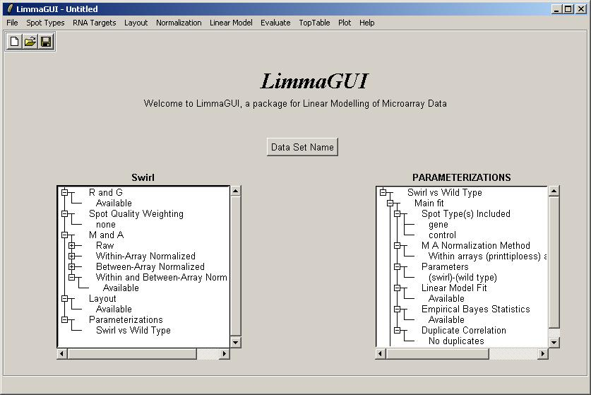Statisticians can note that we did not explicitly enter a design matrix when defining the parameter to be estimated in the linear model for each gene. We will enter a design matrix for the Weaver data set. For the Swirl data set, we will at least demonstrate how to view the parameterization, either as a simple comparison between the two RNA types, or as a design matrix. From the Linear Model menu, click on "View Existing Parameterization".
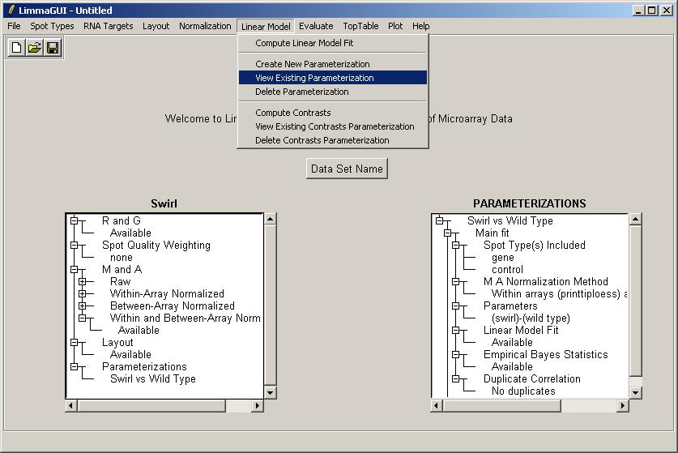There is only one parameterization to choose from (Swirl vs Wild Type) (see below), so click OK.
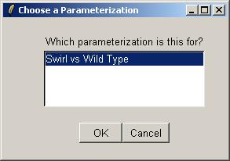Below, we see a simple view of the parameterization (note the minus sign in the parameter definition). By clicking on Advanced, we can see the actual design matrix.
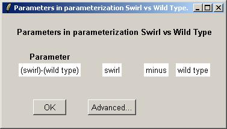The design matrix is shown below. The matrix can be saved as tab-delimited text or copied and pasted into a spreadsheet program.
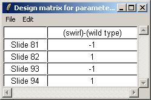From the TopTable menu, click on "Table of Genes Ranked in order Of Differential Expression".
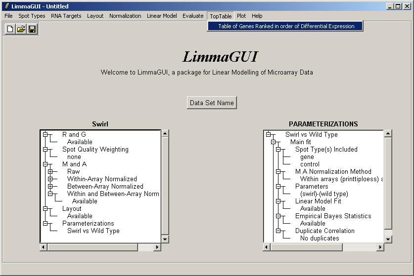Choose the "Swirl vs Wild Type" parameterization.
Choose the "(swirl)-(wild type)" parameter (within the "Swirl vs Wild Type" parameterization).
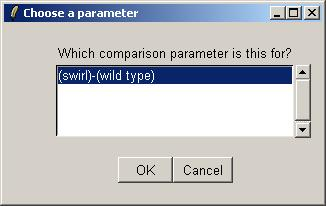Now choose how many genes you would like in the list. By default, the list is ordered by the B statistic.
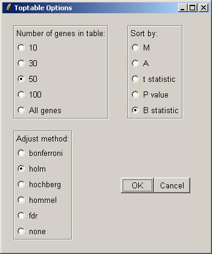The toptable is shown below. Note that the BMP2 gene is correctly ranked at the top of the list and is down-regulated (i.e. it has a negative M value) because Swirl fish are mutant in this gene. Other positive controls appear in the top 50 genes. You can save this toptable (as tab-delimited text) or copy it to the clipboard. (If you chose to show all genes, the table will be too large to display and the spreadsheet/table window, so it will be shown in a text window instead, but it will still look exactly the same after you save it as tab-delimited text and view it in an external spreadsheet program.)

Now from the Plot menu, click on "M A Plot (using fitted M values)".
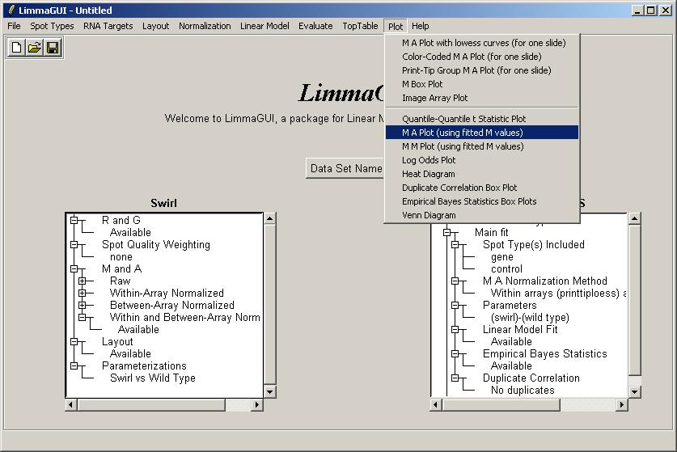Again, choose the "Swirl vs Wild Type" parameterization, and the "(swirl)-(wild type)" parameter. limmaGUI allows you to add gene labels to the plot for genes with the most evidence of differential expression. Enter the number of gene labels you would like.
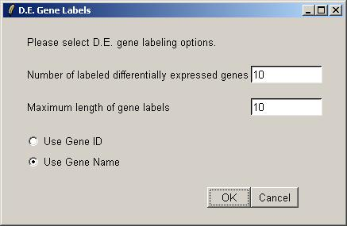We could plot the controls with a different color from the genes, but in this case we will use the same color (black) for all spots and just label the most interesting genes (as judged by the B statistic).
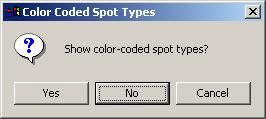The M A plot (with fitted M values) is shown below.
Now from the Plot menu, click on "Log Odds Plot".
The log odds is another name for the B statistic, shown in the toptable. Again, choose the "Swirl vs Wild Type" parameterization, and the "(swirl)-(wild type)" parameter. Again, enter the number of gene labels you would like. The Log Odds plot is shown below.
Now from the Plot menu, click on "Quantile-Quantile t Statistic Plot".
Again, choose the "Swirl vs Wild Type" parameterization, and the "(swirl)-(wild type)" parameter The Quantile-Quantile t Statistic plot is shown below.
Users comfortable with entering R code directly can click on "Evaluate R code" from the "Evaluate" menu. From limmaGUI_0.5.3, it is also possible to enter R code in the R console from which limmaGUI was run. However, the R code evaluated within limmaGUI is automatically evaluated within limmaGUIenvironment, which contains objects for the data required by the current analysis, as distinct from the graphical widgets and other objects which will remain the same after loading a different data set.
The user is presented with a text window in which R code can be entered. We will use this interface to check the first 20 rows of the GAL file, which is stored in an R object called "gal", within the environment limmaGUIenvironment. FOR ADVANCED USERS: When using the "Evaluate R Code" window, it is not necessary to use get("gal",envir=limmaGUIenvironment) because commands in this window are automatically evaluated in limmaGUIenvironment.
After entering the code, choose "Show Text Results only" from the Run menu.
The results are shown below in a read-only text window. They can be saved to a text file, or copied to the clipboard. As well as the pull-down Edit Menu, there as a pop-menu which appears when you Right-Click, allowing you to copy text easily.
You can save your results by selecting "Save As" from the File menu.
The default name for the Limma file is the data set name shown on the main limmaGUI window.
(Advanced users may be interested to know that the .lma file saved by limmaGUI is really just an RData file which can be loaded into an R session. However, it may appear more complicated than a standard .RData file associated with the limma package, because it allows for multiple parameterizations to be stored within a list data structure.)
Once you have saved a Limma (.lma) file, you can try exiting, restarting limmaGUI and opening the file.
If you have an active data set (with name other than Untitled) limmaGUI will remind you to save every time you exit, start a new file or open a file. Currently limmaGUI is not able to detect whether you have made changes since you last saved, so it will always remind you.
This feature is a quick (but not very flexible) way of recording some of the most important graphs and tables from the limmaGUI analysis in an HTML report. If you want to have more flexibility with the format of the report, you should manually save graphs and tables, one at a time, and then insert them into a report yourself.
Try clicking on "Export HTML Report" from the File menu.
Select the components to include in the HTML report. Some components may not be available if you have not yet computed a linear model, or if you have no duplicates. By default the boxplots of t statistics are not included, because they are most useful for looking at the range of t statistics for the controls, e.g. Scorecard Controls, and often the controls are excluded from the linear model to focus on the real genes.
By default the HTML report will have the same name as the data set.
Currently, all the images in the HTML report are saved in PNG format. There may be an option added in the near future to allow the user to save them in JPEG format instead.
The HTML report generation will take some time. If you are impatient, most web browsers will allow you to view an HTML file even if it is incomplete.